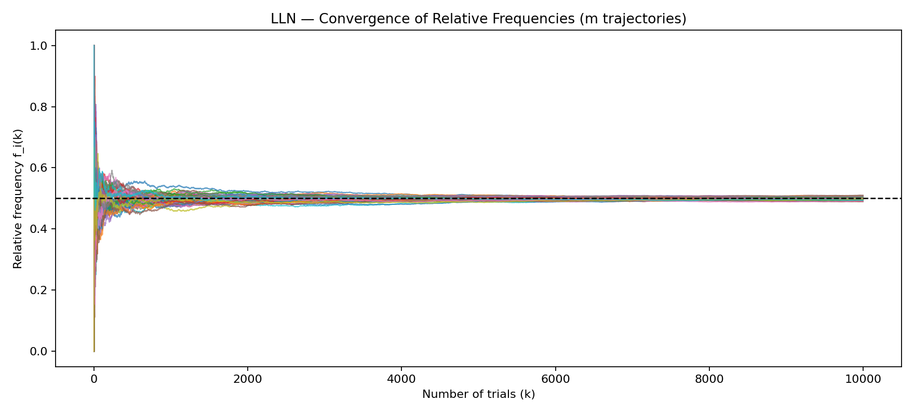
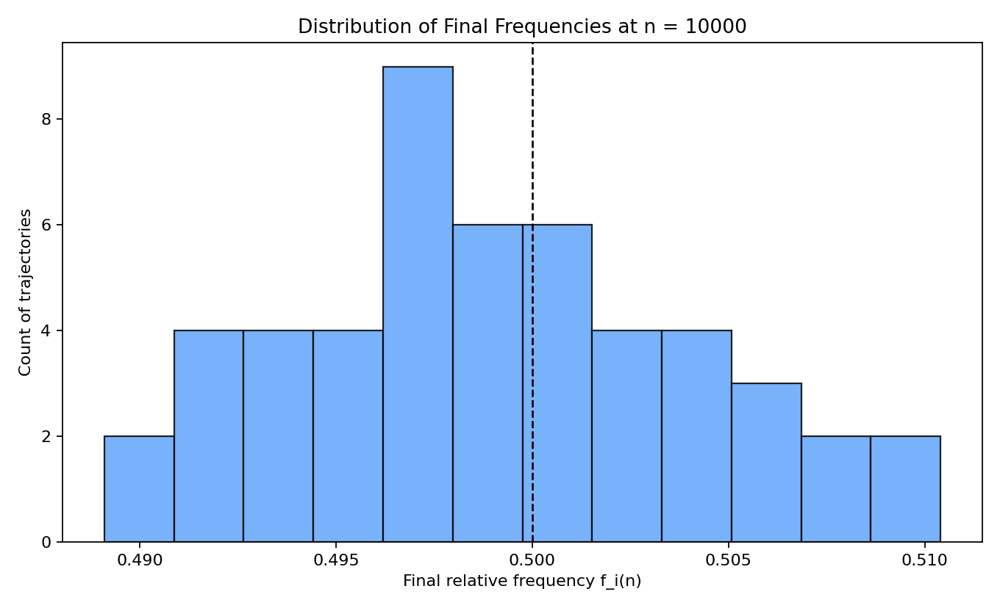

📘 The Law of Large Numbers (LLN) — Theoretical and Practical Analysis
The Law of Large Numbers (LLN) is a cornerstone of probability and statistics. In simple terms: when a random
experiment is repeated many times, the relative frequency of an event tends to stabilize around its true probability.
Key message: with more data, randomness averages out. Frequencies become stable and approach the true probability.
1) What the Law of Large Numbers Is
Consider a fair coin with probability p = 0.5 for heads. If you toss it 10 times,
you may observe 7 heads (f = 0.7). With 1,000 tosses, the frequency is typically close to 0.5.
With 1,000,000 tosses, it will be even closer.
Formally, if f_n = successes / n is the relative frequency after n trials, then
lim (n → ∞) f_n = p.
2) Visualizing the LLN with Multiple Trajectories
In a typical simulation, we generate m independent trajectories. Each trajectory consists of n
Bernoulli trials (success/failure). For trajectory i and step k, the cumulative relative frequency is
f_i(k) = (successes in the first k trials of trajectory i) / k.
What the plot shows
At the beginning (small k) the values fluctuate strongly — frequencies are unstable.
As k grows, all trajectories move closer to p.
The “fan” of dispersion shrinks with more trials.
The final histogram (right side) concentrates around p.

Multiple trajectories converge toward the horizontal line y = p as trials increase.

Final distribution of relative frequencies becomes narrow and centered near p.
(You can replace the image paths above once your plots are available.)
3) Connection with Statistics
The LLN is the conceptual basis of inferential statistics. It guarantees that sample-based estimates become
more reliable with larger samples. In particular, the sample mean converges to the population mean:
This is why larger datasets lead to stable estimates.
4) Applications in Cybersecurity
a) Traffic Monitoring and Anomaly Detection
In networks, firewalls, and log systems, “normal” events show typical frequencies. Over time, empirical frequencies stabilize.
If a frequency shifts significantly, it can indicate an attack or anomaly. Intrusion Detection Systems (IDS) exploit this idea.
b) Frequency Analysis in Cryptography
In monoalphabetic frequency attacks, longer ciphertexts reveal letter frequencies that approach their true linguistic values
(e.g., in English, E ≈ 12%, T ≈ 9%). The LLN makes these statistical attacks feasible.
c) Risk Analysis and Monte Carlo
Monte Carlo simulations repeat random experiments many times. Thanks to the LLN, empirical averages converge to expected values,
providing credible risk estimates.
d) Random Number Generators
Cryptographic systems require strong randomness. PRNGs are tested so that the long-run frequencies of bits and patterns obey the LLN.
If they do not, the generator is not truly random and may be vulnerable.
5) Statistical Interpretation of the Plot
Each trajectory is one sequence of empirical frequencies. Together, they show high variability on the left and stronger concentration on the right.
For a fixed number of trials n, the final histogram of f(n) has
mean ≈ p and variance ≈ p(1 − p)/n. As n increases, the variance tends to zero.
Normal approximation: for large n, f(n) ~ N(p, p(1 − p)/n) — that is, approximately normal around p with shrinking variance.
6) Reproducibility (plots and code)
Below you can link the script that generates the trajectories and the histogram.